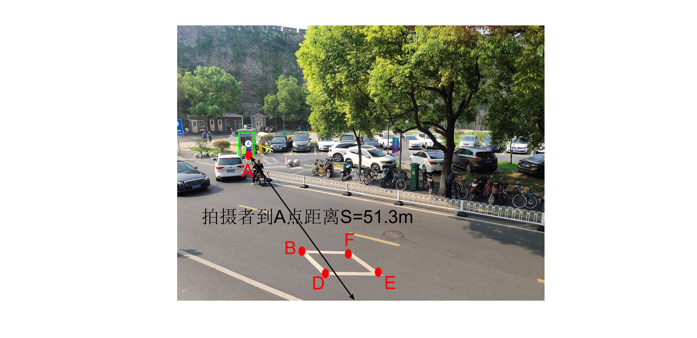

clear all;close all; clc;
global PM f Psi
Phi = 0;
Psi=40*pi/180;
Theta =0;
x0 =-4.17;
y0 = 0;
z0 = 0;
f =35e-3;
dx = 0.0254e-2;
dy = 0.0254e-2;
u0 = 1000;
v0 =750;
PM=pixel(dx,dy,u0,v0);
h=-x0;
X=[Psi h];
options =optimoptions('fsolve','Algorithm','Levenberg-Marquardt');
[Y,fval,exitflag]=fsolve(@fun,X,options)
if exitflag==1
disp('结果收敛');
else
disp('所设初值无效');
end
h=Y(2);Psi=Y(1);
Sc=[389 703 1]';
[ Scy,Scz ] =groundx( Sc,h,0);
DS=sqrt((Scy)^2+(Scz)^2)
e=[937 1138 1]';E=[1206 1205 1]';
[ ey,ez ]=groundx(e,h,0);
[ Ey,Ez ]=groundx(E,h,0);
L_e=sqrt((ey-Ey)^2+(ez-Ez)^2)
de=abs(2.5-L_e)/2.5
openfig('F3.fig');
Equation solved.
fsolve completed because the vector of function values is near zero
as measured by the default value of the function tolerance, and
the problem appears regular as measured by the gradient.
Y =
0.6864 4.1777
fval =
1.0e-11 *
-0.0683 0.2242
exitflag =
1
结果收敛
DS =
51.3078
L_e =
2.6481
de =
0.0592
